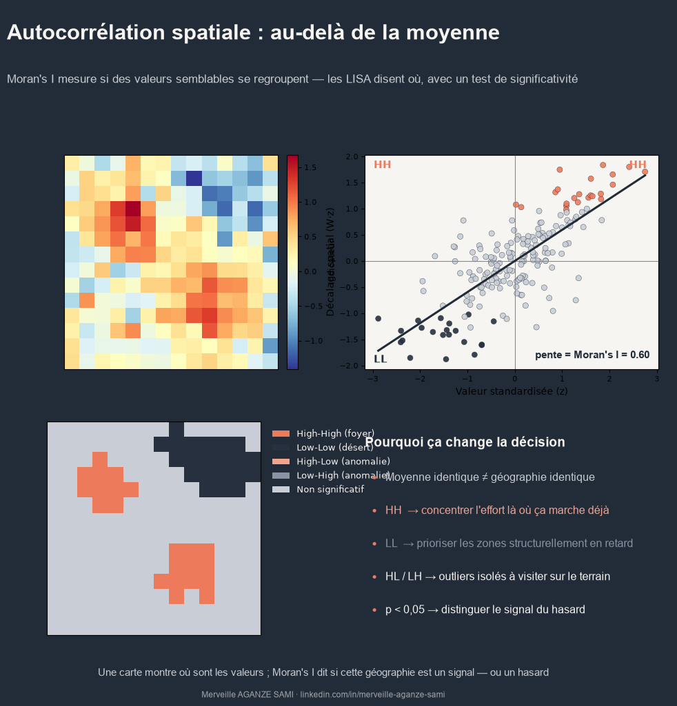

Deux régions peuvent présenter exactement la même moyenne pour un indicateur et décrire pourtant deux réalités géographiques opposées. Dans la première, les valeurs élevées se répartissent de façon homogène ; dans la seconde, elles se concentrent en deux foyers entourés de zones peu dotées. La moyenne, et même une carte choroplèthe, ne permettent pas de distinguer ces deux configurations — alors que la réponse programmatique appropriée n'est pas la même.
L'analyse de l'autocorrélation spatiale fournit un cadre statistique pour trancher. Elle repose sur une intuition formalisée dès 1970 par Waldo Tobler, selon laquelle les entités proches tendent à se ressembler davantage que les entités éloignées (Tobler, 1970). La question opérationnelle devient alors mesurable : le regroupement observé est-il compatible avec une répartition aléatoire, ou traduit-il une structure ?
1. La matrice de voisinage : une décision méthodologique préalable
Toute statistique d'autocorrélation suppose d'avoir défini au préalable ce que « voisin » signifie. Cette définition prend la forme d'une matrice de pondération spatiale W, dont le choix conditionne l'ensemble des résultats. Les conventions les plus courantes reposent sur la contiguïté — deux unités partageant une frontière (critère de la tour) ou seulement un sommet (critère de la reine) — ou sur la distance, par seuil ou par nombre fixe de plus proches voisins.
La matrice est généralement standardisée en ligne, de sorte que la somme des pondérations de chaque unité vaut 1. Ce choix n'est pas neutre : une définition trop large du voisinage dilue les structures locales, une définition trop restrictive isole artificiellement des unités. Documenter ce choix fait partie intégrante de la restitution des résultats (Anselin, 1995).
2. L'indice de Moran global : une mesure de synthèse
Proposé par Patrick Moran en 1950, l'indice I compare la covariance entre chaque unité et ses voisins à la variance totale de la variable (Moran, 1950). Sa valeur se lit sur une échelle allant approximativement de −1 à +1 : une valeur nettement positive indique que les unités semblables se voisinent (regroupement), une valeur proche de zéro une répartition compatible avec le hasard, une valeur négative une configuration en damier où les unités dissemblables s'attirent.
La significativité s'apprécie par comparaison à une distribution de référence obtenue par permutations aléatoires des valeurs sur les unités géographiques. La pseudo p-value qui en résulte indique la fréquence à laquelle une structure au moins aussi marquée apparaîtrait sous l'hypothèse d'indépendance spatiale (Cliff & Ord, 1981).
Limite à connaître. L'indice de Moran global produit une valeur unique pour l'ensemble du territoire. Un I global non significatif n'exclut pas l'existence de regroupements localisés qui se compensent mutuellement. Il constitue un point de départ, pas une conclusion.
3. Les LISA : localiser les structures
Les indicateurs locaux d'association spatiale, formalisés par Luc Anselin, décomposent l'indice global en contributions individuelles. Chaque unité reçoit une statistique locale et une significativité propre, ce qui permet de la classer dans l'une des quatre catégories du diagramme de Moran (Anselin, 1995) :
- High-High : unité à valeur élevée entourée d'unités à valeur élevée — foyer de concentration.
- Low-Low : unité à valeur faible entourée d'unités à valeur faible — zone structurellement en retrait.
- High-Low et Low-High : valeurs atypiques au regard de leur voisinage — anomalies spatiales qui méritent une vérification de terrain.
- Non significatif : configuration compatible avec une distribution aléatoire.
La statistique Gi* de Getis et Ord poursuit un objectif voisin mais avec une logique différente : elle compare la somme des valeurs d'un voisinage à la somme attendue sous hypothèse d'indépendance, et distingue explicitement les agrégats de valeurs fortes des agrégats de valeurs faibles (Getis & Ord, 1992). Les LISA et le Gi* ne sont pas interchangeables : le premier identifie aussi les anomalies isolées, le second se prête mieux à la cartographie de points chauds et froids.
4. Précautions d'interprétation
Trois précautions conditionnent la validité des conclusions.
- Comparaisons multiples. Tester simultanément plusieurs centaines d'unités multiplie les faux positifs. Une correction, par exemple selon la procédure de Benjamini-Hochberg, est recommandée avant toute interprétation des cartes de significativité.
- Effet du support spatial. Les résultats dépendent du découpage administratif retenu. Ce phénomène, connu sous le nom de problème des unités spatiales modifiables, implique qu'une même donnée agrégée différemment peut produire des conclusions divergentes.
- Effets de bord. Les unités situées en périphérie de la zone d'étude ont mécaniquement moins de voisins, ce qui biaise leur statistique locale.
5. Portée opérationnelle
Pour un dispositif de suivi-évaluation, l'apport est direct. L'identification de foyers High-High permet de concentrer les moyens là où une dynamique est déjà engagée ; celle des zones Low-Low signale des territoires dont le retard est structurel plutôt que conjoncturel. Les anomalies isolées, elles, constituent des candidats naturels pour une mission de vérification, dans la mesure où elles suggèrent un facteur local non capté par les données disponibles.
L'analyse transforme ainsi une carte descriptive en instrument de ciblage documenté. Elle fournit surtout un argument défendable : la priorisation ne repose plus sur une lecture visuelle de la carte, mais sur un test statistique dont la méthode, les paramètres et le seuil peuvent être explicités.
Points essentiels
- La définition du voisinage (matrice W) conditionne tous les résultats et doit être documentée
- L'indice de Moran global résume la structure ; les LISA la localisent
- La significativité s'obtient par permutations, avec correction des comparaisons multiples
- Gi* privilégie les points chauds et froids, les LISA détectent aussi les anomalies isolées
- Les résultats dépendent du découpage spatial retenu (problème des unités modifiables)
Références
- Anselin, L. (1995). Local Indicators of Spatial Association—LISA. Geographical Analysis, 27(2), 93–115. doi.org/10.1111/j.1538-4632.1995.tb00338.x
- Cliff, A. D., & Ord, J. K. (1981). Spatial Processes: Models and Applications. London: Pion.
- Getis, A., & Ord, J. K. (1992). The Analysis of Spatial Association by Use of Distance Statistics. Geographical Analysis, 24(3), 189–206. doi.org/10.1111/j.1538-4632.1992.tb00261.x
- Moran, P. A. P. (1950). Notes on Continuous Stochastic Phenomena. Biometrika, 37(1/2), 17–23. doi.org/10.2307/2332142
- Tobler, W. R. (1970). A Computer Movie Simulating Urban Growth in the Detroit Region. Economic Geography, 46, 234–240. doi.org/10.2307/143141

Merveille Aganze Sami
Conseillère MEL & Gestion de Bases de Données. Plus de 9 ans d'expérience en suivi-évaluation, SIG et digitalisation auprès d'organisations internationales (GIZ, Enabel) en RD Congo.
Des indicateurs à analyser dans leur dimension spatiale ?
Prendre contact